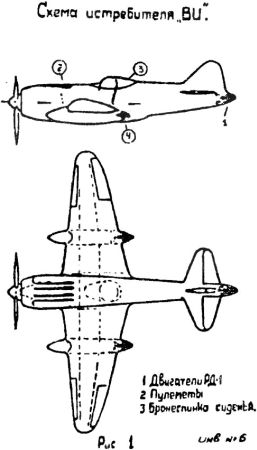

Реактивный истребитель «ВИ»
Идея Королева о применении ракетного двигателя для повышения высоты полета истребителя была осуществлена уже в ходе войны. Правда, не на самолетах «Пе-2», а на самолете конструкции Семена Алексеевича Лавочкина.
К разработке реактивной модификации истребителя «Ла-5» Сергей Павлович подошел обстоятельно. В записке к проекту он излагает свое видение двух возможных вариантов ракетного самолета «Ла-5ВИ» («Высотный истребитель»), отличающихся друг от друга реактивной установкой.
В конечном виде «Ла-5ВИ» должен был выглядеть следующим образом. Начальный вес самолета с полным запасом горючего и смазочного материала — 3200 килограммов, дополнительный вес реактивной установки (сухой) — 200 килограммов, еще 100 килограммов отнесено на счет герметичной кабины.
На самолете предусматривалась установка трех двигателей «РД-1» (тягой 300 килограммов): первоначально одного — в хвостовом коке (1-й этап), а затем еще двух — в гондолах, позади кислотных баков (2-й этап), или трехкамерного двигателя «РД-3» (тягой 900 килограммов) — в обоих случаях с приводом для вращения насосного агрегата от мотора. Для питания двигателя возможно также использование автономно действующего турбонасосного агрегата с расположением его позади кабины пилота. Однако, как пишет Королев, это представляется менее выгодным (по весу, габаритам, дополнительной необходимости в воздухе, воде, масле, подогреве и прочее) по сравнению с приводом от мотора при форсированных оборотах насоса для обслуживания трех камер.
В связи с тем, что на истребителях нет свободных объемов и очень строги требования центровки, Сергей Павлович предложил помещать топливо для ракетного двигателя в подвесных гондолах, под крыльями. По его мнению, потери в скорости от этого в полете до включения ракетного двигателя оказались бы невелики.
Рабочие высоты будущего истребителя должны были составлять 14–15 километров и даже доходить до 17 километров. Максимальная горизонтальная скорость возрастала согласно расчетам при тяге РУ 300 килограммов до 779 км/ч, при тяге 600 килограммов — до 900 км/ч и при тяге 900 килограммов — до 950 км/ч.
Оценивая предложение Королева, один из видных специалистов по тактике писал тогда: «По своим летно-техническим данным и по конструкции самолет ВИ (высотный истребитель) представляет собой самолет совершенно нового класса».
Проект «ВИ» Сергей Королев направил самому Лавочкину. И его предложение было осуществлено на самолете «Ла-7», к названию которого при этом добавилась буква «Р».
Истребитель «Ла-7Р» специально предназначался для перехвата немецких разведчиков над Москвой. Однако принять участие в боевых действиях он не успел. Фронт катился на запад, и необходимость в таком специализированном перехватчике отпала.

Вообще идея вспомогательной реактивной установки на базе ЖРД Валентина Глушко и по конструктивной схеме Сергея Королева получила немалое распространение. Состоялось более 400 огневых испытаний двигателей «РД-1» и «РД-1ХЗ» на самолетах «Пе-2» конструкции Владимира Петлякова, «Ла-7Р» и «Ла-120Р» Семена Лавочкина, «Як-3» Александра Яковлева, «Су-6» и «Су-7» Павла Сухого.
В 1945 году летные испытания прошел самолет «Як-3». При включенном ракетном двигателе прирост скорости для этой машины достиг 182 км/ч.
Своеобразным признанием успехов Королева и Глушко стало участие самолета «Ла-120Р» в воздушном параде, состоявшемся 18 августа 1946 года в Тушино.
Академик Валентин Глушко, подводя итоги работы над самолетными ракетными двигателями, отмечал: «После завершения заводских испытаний на шести типах самолетов в 1945 году были проведены наземные и летные испытания нашего двигателя в летно-исследовательском институте. <…> Затем двигатели РД-1ХЗ и РД-2 успешно прошли государственные стендовые испытания, отчеты по которым утверждены Сталиным.
Успехом применения ЖРД на самолетах мы обязаны не только надежному двигателю, но также разработке и доводке самолетных систем силовой установки, над чем плодотворно трудился С. П. Королев».
В 1945 году за участие в разработке и испытании ракетных установок для боевых самолетов Сергей Королев, уже получивший свободу, был награжден орденом «Знак Почета».